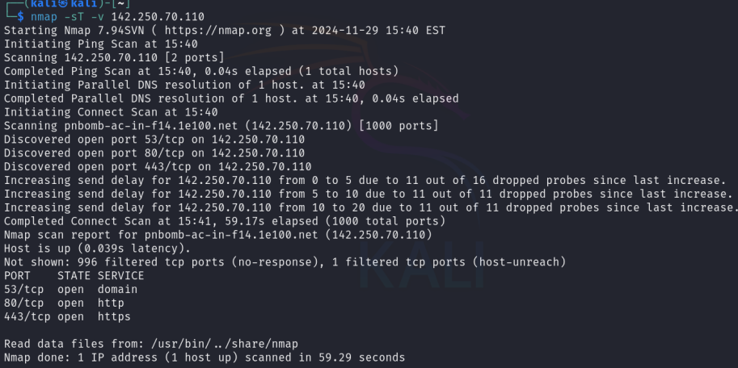

TCP Connect / full-open scan
-sT: use to perform TCP Connect / full open scan
-v: Increase verbosity level (use -vv or more for greater effect)
command: nmap -sT -v 142.250.70.110

Stealth scan (Half-Open scan)
-sT: use to perform stealth scan / TCP half-open scan
-v: Increase verbosity level (use -vv or more for greater effect)
command: sudo nmap -sS -v 142.250.70.110

Xmas scan
-sX: use to perform Xmas scan
-v: Increase verbosity level (use -vv or more for greater effect)
command: sudo nmap -sX -v 142.250.70.110

TCP Maimon scan
-sM: use to perform TCP Maimon scan
-v: Increase verbosity level (use -vv or more for greater effect)
command: sudo nmap -sM -v 142.250.70.110